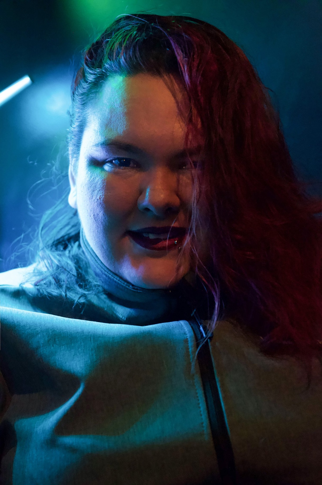

<div class="content"> 
<div class="drzac"> 
    <div class="row"> 
        <div class="col-2"> </div>
        <div class="col-3"> 
            <div class="element"> 
                
            <div class="middle">
                <div class="text"> 
                <p> <i class="fa fa-user" ></i>  Milica Ivančić</p>
                <p> <i class="fa fa-calendar"></i> 05.03.1998.</p>
                <p> <i class="fa fa-book"></i> Visoka ICT Mrežno i softversko inženjerstvo (prva godina)</p>
                <p> <i class="fa fa-book"></i> Visoka ICT Internet tehnologije (diplomirala 2019.)</p>
                </div>
              </div>
            </div>
        </div>
        <div class="col-5"> 
            <div id="opis"> 
                <p >  Zovem se Milica Ivančić 2001/19, student sam prve godine master studija Mrežno i softversko inženjerstvo u 
                    Visokoj ICT školi. Završila sam osnovne studije 2019. godine na smeru Internet Tehnologije. Tokom studiranja 
                sam stekla znanje iz sledećih oblasti: HTML, CSS, PHP, jQuery, Angular, JavaScript, C#, ASP.NET,
                Laravel, Sql. Svoju karijeru želim da usmerim ka backend programiranju u C#-u. 
                Ovaj sajt je rađen od 0 kao što možete primetiti template nije korišćen. <a href="#"> dokumentacija </a>
             </p>
            </div>
        </div>
        <div class="col-2"> </div>
    </div>
</div>

</div>
